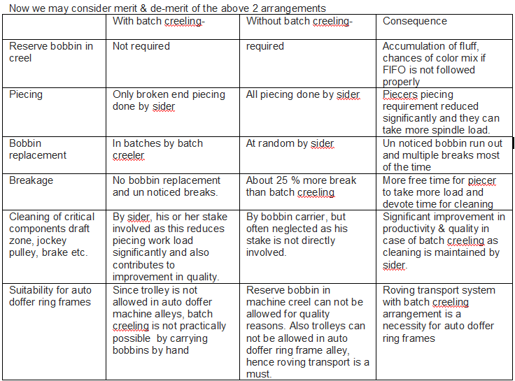

A study
By-A.K.Bhattacharya,B.Sc(Tech),TextilesAlthough India still has very high level of unemployment problem, given to choose employment in manual work force, along with various other manufacturing industries, the intelligent worker always gives the last preference to the Textile industry. More so experienced in the last 2 decades, the advent of various other industries offering lucrative compensations and comparatively better working conditions made the matters worse for the textile industry. As a result textile industry has felt acute shortage of skilled operatives called siders, doffers etc, specially in Ring spinning which has forced it to embrace auto doffer ring frames both in the form of replacement of old manual doffing ring frames by new ring frames with auto doffer & converting manual ring frames to ring frames with auto doffing retrofit.
But this change has brought in along with it, introduction of the ancillary equipment, called roving transport system, a must for all auto doffer ring frame users.
Roving Transport-
- Meaning-Transportation of speed frame bobbins to ring frame spindle point for creeling
Work involved-
- Taking out speed frame doffs and store in trolleys or suitable storage area in case of non-availability of sufficient trolleys.
- Carrying roving bobbins from storage area to ring frame spindle point for creeling and piecing.
Practices adopted in the industry-
- Bobbins taken from storage area by ring frame sider and creeled in ring frame on need basis.
- Bobbins are creeled in reserve bobbin holders by bobbin carrier boys in ring frame creel & replaced by the sider which is not acceptable now a days for quality reasons.
- Bobbins taken by batch creelers and creeled in batches, generally 120 bobbins at a time by 3 batch creelers.
- In all above cases bobbins are carried either by hand or by taking the trolley inside the ring frame alley to spindle point for creeling.
Study-
Work load for ring frame sider-
1) Need basis creeling by ring frame siders, work load 2016 bobbins per sider- bobbins to be replaced per sider-200x1.025x2016/(1000x1.6)=258 bobbins Average time required=3/4minx258/60=3.2hr,includes bringing speed frame bobbin from storage area (pneumafil waste-2.5 %, net wt of speed frame bobbin-1.6 kg)
- Attending breakages @ 40breaks/1000 spindles=40x2016x8/1000=645 breakages per 8 hrs, considering practical piecing rate 4 /min,645/(4x60)=2.7 hr
- Cleaning of draft zone-1/2 hr/mc/roundx2 roundsx2 machines = 2 hrs
- Cleaning of jockey pulley area-1/2 hrx2=1 hr
- Cleaning of brake area-1/2 hrx2 =1 hr
- Cleaning of remnant of 2 machines-10 minsx2=20 min=.3 hr Total-3.2+2.7+2+1+1+.3 hr=10.2 hr
- Practical available time by sider at 95 % efficiency 7.6 hrs (this includes time available with reliever support)
- So practical time lag is 10.2-7.6=2.6 hrs
How the operator manages this-
He or she silently ignores cleaning of the critical components like drafting zone, jockey pulley, brake etc which ultimately increases breakage rate and results in poor quality.
Also because of need basis creeling the sider is at times not aware of the bobbins running out randomly at different spindle points causing undrafted ends due to last layer running and subsequent multiple breaks.
Why batch creeling?
- For every 5040 spindles i.e. for every 2.5 siders, one semiskilled hand, called batch creeler who works in a group of 3, bring bobbins, do the creeling and piecing (generally 120 spindles at a time for group of 3 for time bound fast creel change) completely eliminating chances of idle spindle due to random running out of roving bobbins and avoid last layer running.
One batch creeler compensate for the time lag of 2.5 siders i.e.2.5x2.6=6.5 hrs
Cleaning of remnants for 5 m/cs 5x10= 50 min
Total engagement 6.5 hrs i.e 6 hr 30 min +50 min=7 hr 20 min
Time remaining 8 hr- 7 hr 20 min= 40 min (for lunch break & personal time)
Looking into the high productivity and present quality demand, contribution of batch creeler is a necessity now a day. - Batch creeling is more necessary because of the restriction of movement of trolleys in the ring frame alley due to consequential chances of damage to the doffer beam of auto doffer machines .But without taking the trolley in the alley it is practically impossible for the sider to creel and piece every time a roving creeling is required.
- Concept of reserve bobbins in ring frame creel for use by sider is now not accepted because of bobbins are not used on FIFO basis in many cases and sometimes even to the extent of color variation due to bobbins of old lot in use. Even if reserve bobbins are allowed it is done by bobbin carriers which is an extra engagement of 3 bobbin carriers per shift who are given additional load of draft zone cleaning, jockey pulley cleaning, brake cleaning, remnant cleaning etc. For carrying bobbins in the ring frame alley in this case also requires roving transport system as trolleys are not allowed in auto doffer ring frames.
Solution-Speed frame doff trolleys can be directly taken to the reserve bobbin area or in case of inadequate number of trolleys, from roving storage area to the roving transport runner/slider by batch creelers.
By doing above arrangement the following gains can be achieved-
1)By batch creeling arrangement practical breakage rate can be brought down by about 25%,for example 40 breaks /1000 spindles per hour can be brought down to 30 breaks /1000 spindles per hour as there is no unnoticed run out of bobbins hence no breaks/multiple breaks.
Now total breakages to attend @ 30breaks/1000 spindles=30x2016x8/1000=484 breakages per 8 hrs, considering practical piecing rate 4 /min, time required will be 484/4x60=2.0 hr
Now if the Siders work load is increased by 504 spindles
Total breakages to attend @ 30breaks/1000 spindles=30x2520x8/1000=605 breakages per 8 hrs, considering practical piecing rate 4 /min,605/(4x60)=2.52 hr
With this arrangement even with increased work load piecing time per sider is lesser i.e.2.52 hrs in place of 2.7 hrs in earlier case.
For a mill of 30240 spindles sider engagement with 2016 spindle will be 15 whereas with 2520 engagement it will be 12.

Looking into the study above, we may conclude that roving transport system with batch creeling arrangement is a necessity for auto doffer ring frames.
Also from above study we find that for a 30240 spindle mill, total manpower requirement in both ‘with batch creeling& without batch creeling’ is 18.But skilled high cost sider requirement is more in case of random creeling. Also any shortage of sider directly causes stoppage of the machine whereas semiskilled batch creelers may be made available easily. So the sider requirement of 12 in place of 15 is always desirable.
Now what type of roving transport?
We often confuse roving transport as an automation which can reduce manpower. Although there is reduction in skilled manpower with roving transport system, detailed study above shows it is more of a necessity which fulfils requirements for trouble free working to meet high productivity with best quality. In short the roving transport should eliminate the necessity of trolley movement in ring frame alley and meet batch creeling requirements.
Roving transport systems available in the market are mainly of 3 types-
1) Manual 2) Semi automatic 3) Automatic1)Manual roving transport- These are with sliders generally on every alternate machine depending on machine length & customer requirement ,these are creeled in reserved area from doff trolley by batch creelers and taken in the alley for batch creeling. These can be used for random need basis creeling also but detailed study above shows that batch creeling is always preferable than need basis creeling. The rails for movement of sliders are retrofitted on the ring frame it self and no extra space is required. Also these systems are practically maintenance free.
2) Semi automatic roving transport system-These are equipped with rails, diverters & motors which can be used to move roving bobbins to spindle point by motorized movement activated manually. This system needs lot of complicated fabrication work & space requirement and costs 2 to 4 times the cost of manual roving transport. This system consumes power and also need certain level of maintenance. Also after adding so much complication, there is still need for group of 3 batch creelers for time bound batch replacement.
3) Fully Automatic system-These are fully automatic power driven roving transport systems with high cost, highly sophisticated speed frames with auto doffer. The speed frame to ring frame spindle point transportation is also automatic with all inherent complications of an automatic system which are rarely maintainable in Indian spinning mills because of complicated technology, high maintenance cost, non-availability of competent personnel and above all not given the importance, as it always has the status of an ancillary machine not able to affect ring production directly & very rarely restarted after any major break down. As a result after a short period, these transport systems along with highly complicated auto doffing of speed frames are left in the department as show pieces. The power cost of running this system is about 0.01 units per kg of yarn for 30 c yarn, i.e. for 30 cmbed conversion if the UKG is 3.6 the UKG will increase to 3.61 with fully automatic roving transport system. These systems cost 10 to 20 times the cost of a manual roving transport system and after all, this system still require a group of 3 batch creelers to meet time bound batch replacement. When risk of replacing semiskilled work force by this type of complicated, high cost, high maintenance automatic equipment is considered the entire purpose of automation in this area especially in Indian condition, gets defeated.
Now consider all points one by one –
1) Ring frames with auto doffer-necessary2) Batch creeling –necessary
3) Group of batch creelers without any increase in total manpower but with reduction in skilled man power –necessary
4) Automatic/semi-automatic roving transport system with high initial cost, high maintenance cost, extra space requirement, power driven with lot of complications and without man power reduction –unnecessary
5) Manual roving transport system –Simple, manually operated, without extra space requirement, with very low initial cost, maintenance free without any increase in manpower, with reduction in skilled manpower –necessary.